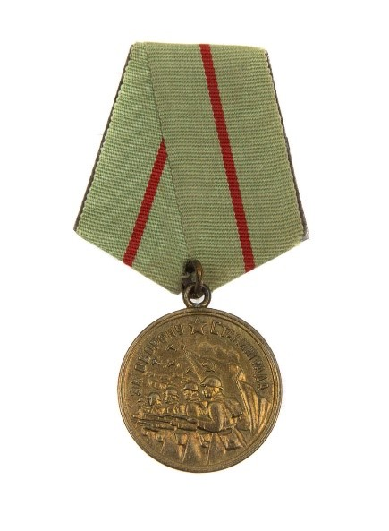

22 декабря 1942 года
Источник: Волгоградская правда от 22 декабря 1982 года.
ОТ СОВЕТСКОГО ИНФОРМБЮРО
Вечернее сообщение 22 декабря.
Юго-западнее Сталинграда продолжались ожесточенные бои. Советские войска сдерживают натиск крупных сил врага.
Событие. 22 декабря 1942 года Указом Президиума Верховного Совета СССР учреждена медаль «За оборону Сталинграда». Этой медалью было награждено более 700 тыс. участников Сталинградской битвы.

Указ Президиума Верховного Совета СССР от 22 декабря 1942 г.
«Об учреждении медалей «За оборону Ленинграда», «За оборону Одессы», «За оборону Севастополя» и «За оборону Сталинграда» и о награждении этими медалями участников обороны Ленинграда, Одессы, Севастополя и Сталинграда»
1. Медалями "За оборону Ленинграда", "За оборону Одессы", "За оборону Севастополя" и "За оборону Сталинграда" награждаются все участники обороны Ленинграда, Одессы, Севастополя и Сталинграда - военнослужащие Красной Армии, Военно-Морского Флота и войск НКВД, а также лица из гражданского населения, принимавшие непосредственное участие в обороне.
2. Вручение медалей производится от имени Президиума Верховного Совета СССР на основании документов, удостоверяющих фактическое участие в обороне Ленинграда, Одессы, Севастополя, Сталинграда, выдаваемых командирами частей, начальниками военно-лечебных заведений и соответствующими областными и городскими Советами депутатов трудящихся.
3. Вручение производится:
- лицам, находящимся в войсковых частях Красной Армии, Военно-Морского Флота и войск НКВД,
- командирами войсковых частей, а лицам, выбывшим из состава армии и флота, - областными, городскими и районными военными комиссарами по месту жительства награжденных;
- лицам из гражданского населения - участникам обороны Ленинграда и Сталинграда - Ленинградским и Сталинградским областными и городскими Советами депутатов трудящихся, а участникам обороны Одессы и Севастополя - областными и городскими Советами депутатов трудящихся по месту жительства награжденных.
4. Медали "За оборону Ленинграда", "За оборону Одессы", "За оборону Севастополя" и "За оборону Сталинграда" носятся на левой стороне груди.
5. Медали "За оборону Ленинграда", "За оборону Одессы", "За оборону Севастополя" и "За оборону Сталинграда" лиц, погибших в боях при обороне или умерших, передаются семье награжденного вместе с удостоверением к медали.
Карта
В период ожесточенных боев в районе Громославки я находился на командном пункте 98-й стрелковой дивизии. Никогда не забуду героических подвигов наших моряков–тихоокеанцев, которые с гранатами и бутылками с горючей смесью бросались на танки врага.
Подводя итоги за 21 декабря, пришли к выводу, что противник на этом не остановится. Он может предпринять новые попытки прорваться к своим окруженным войскам. Такой же оценки придерживался и Военный совет. Уже в ночь с 21 на 22 декабря командование фронта в своем боевом распоряжении отмечало, что с утра 22 декабря следует ожидать наступление врага в направлении Верхне-Царицынский-Зеты.
Интересно отметить, что командующий армейской группой генерал Г. Гот созвал экстренное совещание командного состава, на котором присутствовал и командир 57-го танкового корпуса. Здесь было принято решение нанести концентрированный удар в новом направлении - Васильевка, Зеты, в стык между 2-й гвардейской и 51-й армиями силами 6-й и 17 танковых дивизий. Помню забавный случай: воздушная разведка донесла, что противник развернул массу танков – шесть рядов по 60 танков для атаки. Была опасность прорыва. Что противопоставить врагу? У нас было, пожалуй, больше танков, чем у противника. Мы имели свыше шестисот, но не было горючего – в баках осталась четверть заправки. Отдал приказ снять маскировку с танков, а если они в оврагах, вывести их на бугры, пусть посмотрит враг, на что он напорется. В ставку Гитлера полетели срочные депеши: «Вся степь усыпана советскими танками!». Так был сорван и этот план врага.
Бойцы вспоминают. Из воспоминаний И. Зайченко, бывшего командира взвода 45-мм пушек. «На пятые сутки непрерывного марша по заснеженной степи остановились у Громославки на берегу реки Мышкова. Здесь и занял оборону 166-й стрелковый полк 98-й стрелковой дивизии. По решению командира полка майора Козина наша противотанковая батарея 45-мм пушек, которой командовал лейтенант Канев. Была выдвинута за реку в боевые порядки пехоты.
Мой взвод оседлал главную дорогу, идущую через мост в Громославку: орудие сержанта Мостового стояло в отдельном дворе, орудие сержанта Сахапова - на высоком берегу реки. Слева от нас огневые позиции заняли два других взвода батарее – младшего лейтенанта Котова и лейтенанта Карташева, справа - полковая батарея 76-мм пушек.
Потерпев неудачу прорваться вдоль дороги, фашисты стали искать слабые места в нашей обороне. На взвод Котова помчалось пять таков. Два орудия встретили их кинжальным огнем. Но и эти танки подбили артиллеристы взвода Карташева.
Когда мои бойцы помогали Котову, через боевые порядки батареи 76-мм пушек прорвался тяжелый танк. Под его гусеницами хрустнуло орудие Мостового, погиб весь расчет. Но и танк не ушел от возмездия…
С наступлением темноты фашисты прекратили наступление. Утром, когда совсем рассвело, на поле боя мы насчитали 39 сгоревших немецких танков. Противника вблизи не было.
… В прошлом году я побывал в Громославке. Там, где оборонялся 166-й стрелковый полк, высится насыпной курган со стелой. На стеле написано: «На этом рубеже 21 декабря 1942 года была остановлена и разбита доблестными частями Красной Армии армада немецко-фашистских танков фельдмаршала Манштейна, рвавшаяся в Сталинград на выручку окруженной армии Паулюса.
В стане врага.
Ставка Гитлера заявляла: 6-я армия отныне называется «Крепость Сталинграда». Все приказы верховного главнокомандования и генерального штаба сводились к одному: держаться и ожидать выручки – армии Гота.
Сведения о начавшемся наступления Гота приподняли дух. Но ненадолго. Вскоре к Ф. Паулюсу прилетел личный представитель Манштейна: Армия Гота встретила очень сильное сопротивление численно превосходящего противника. Она почти не продвигается. Катастрофа была неминуемой…